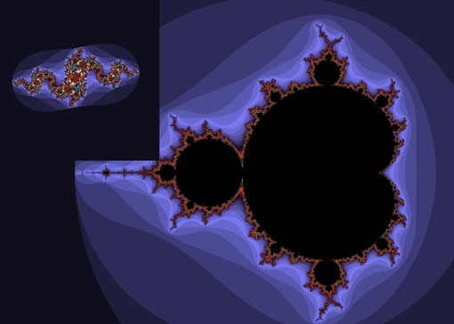

| Il Frattale di Mandelbrot |
|---|
|  |
Benoit Mandelbrot, nato nel 1924 e morto poco tempo fa, nel 2010, è stato il padre dei frattali, un grande matematico polacco e ricercatore IBM.
La sua famiglia era composta da grandi scienziati e ricercatori e nel 1936 si spostarono dalla Polonia a Parigi.
Proprio qui, grazie a due suoi zii, iniziò la sua carriera matematica. In quel periodo era da poco iniziata la seconda guerra mondiale, quindi fu costretto a spostarsi da Parigi (zona centrale della Francia) a Tulle, un po’ più in periferia, dove si diploma nel 1942.
Mandelbrot scoprì il suo frattale (L’insieme di Mandelbrot) per caso nel 1979, mentre faceva esperimenti, con l’ausilio di computer grafica, al progetto di Gaston Maurice Julia rappresentando graficamente le equazioni su computer. Ed è grazie al suo esperimento che si arrivò ad una conclusione: il frattale di Mandelbrot comprende anche quello di Julia.